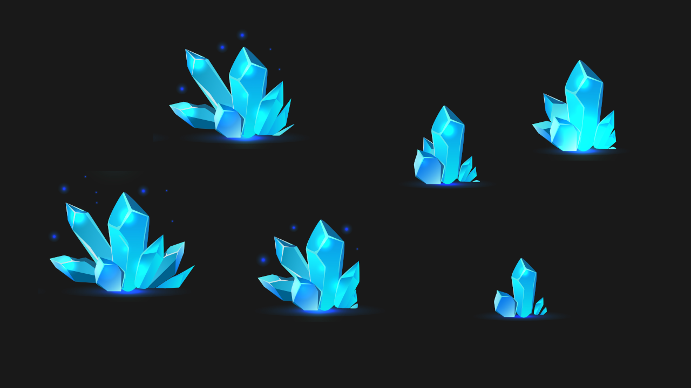
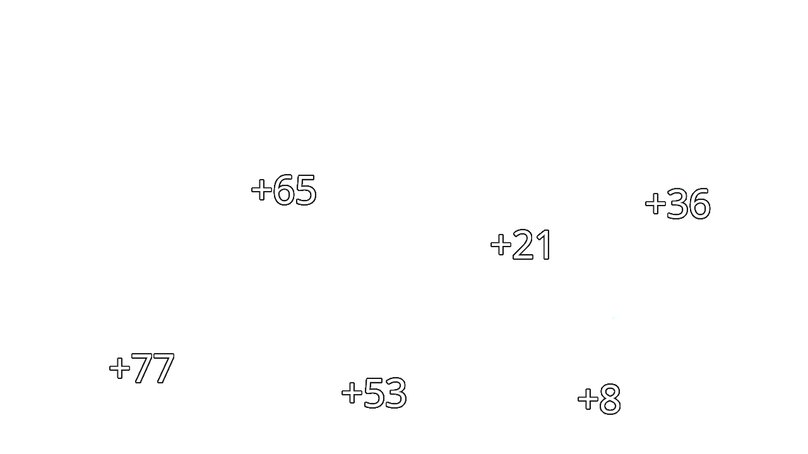
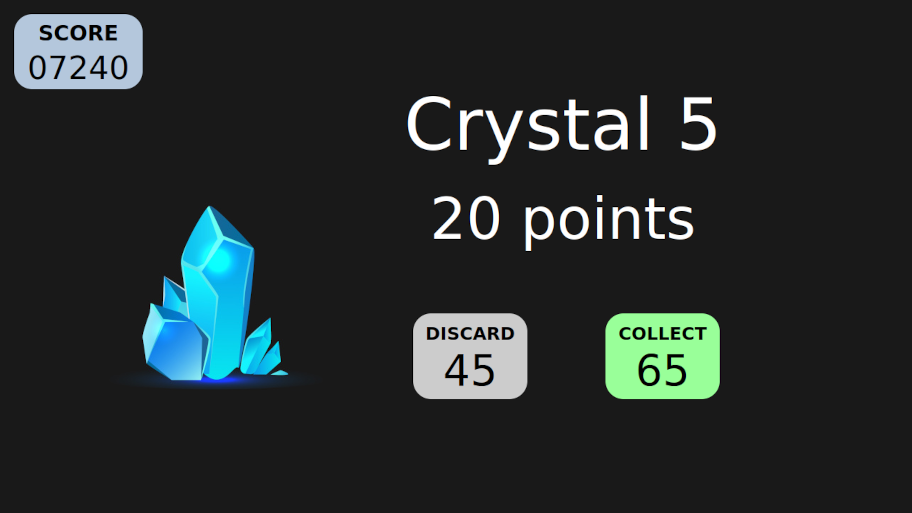
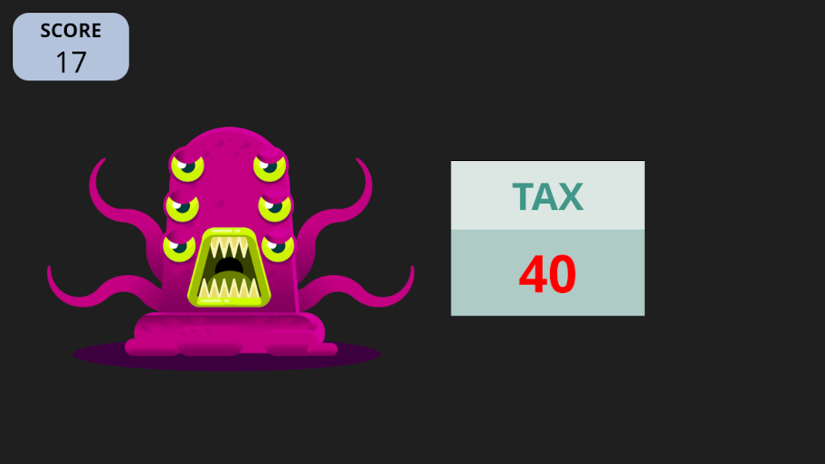
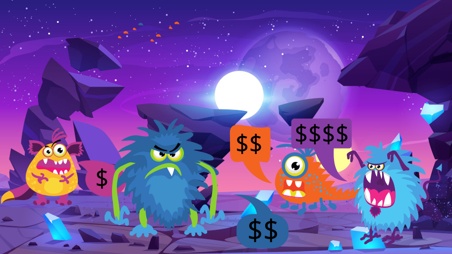
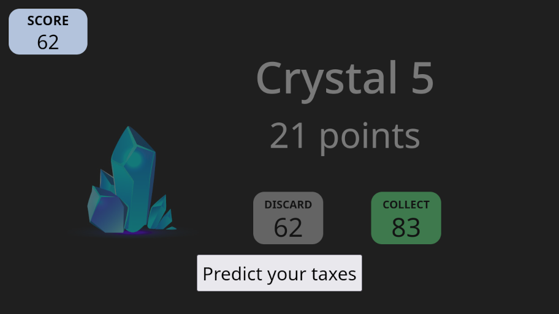
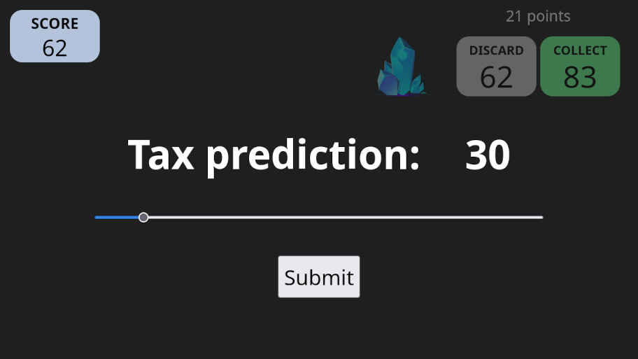
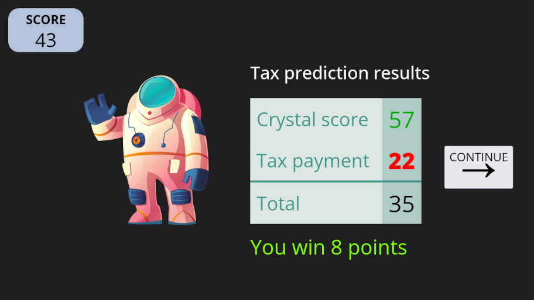
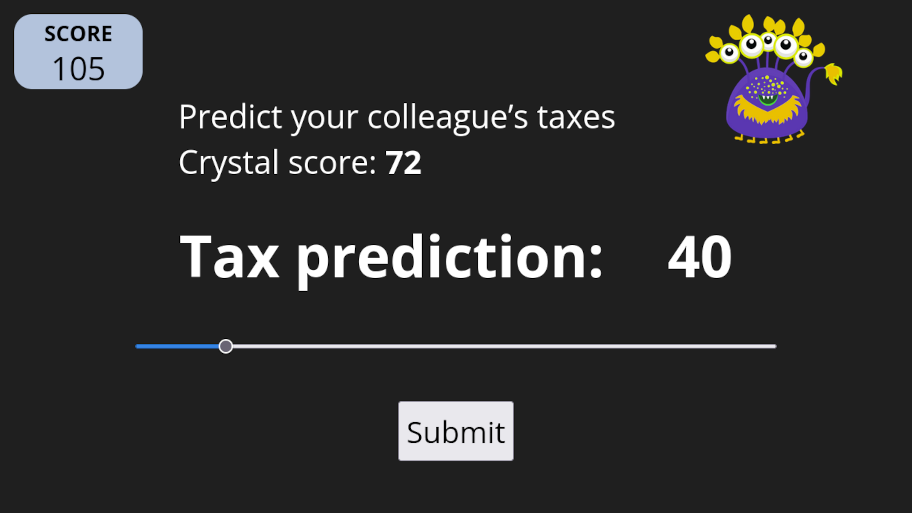
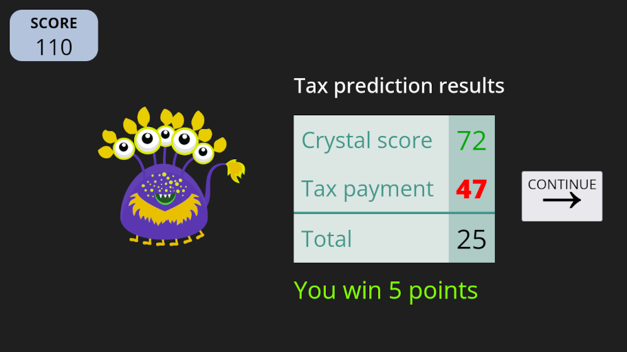

IMPORTANT: To quit the experiment, press ESC. If you quit the experiment before it’s over, you won’t get paid, so be careful.
Thank you for participating in this experiment about how people make decisions. You’ll earn money and help with our research. You’ll get £ for your participation. You can also get up to £ as a bonus depending on your performance. If you pay attention and do your best, you’ll get a much higher bonus.
You must finish this experiment within to receive your payment. This is plenty of time and there’s no need to rush, but please find a quiet place where you won’t be interrupted. Turning off your phone helps too.
When navigating these screens, you can click the right arrow to go to the next screen and the left arrow to go back to the previous screen. Please read the following instructions carefully as you will later need to complete a quiz on them.
It is the year 2452. As an employee of Cosmic Crystal Corp (C3), your mission is to fly daily to planet Zyxlon to collect the most valuable crystals in the galaxy.
These crystals, coveted across the universe for their extraordinary healing properties, are sold on the Intergalactic Market for profit.

Each working day, you’ll board your state-of-the-art spaceship, the Celestial Cruiser X9, and set course for Zyxlon.
On your quest, you’ll encounter five unique crystals each day. Some are small and delicate, emitting a soft glow, while others are massive and radiant, their facets reflecting the light of nearby stars.
Each crystal is worth a different number of points depending on their size and properties. As a C3 employee, you are equipped with a high-tech crystal scanner that displays the point value of each crystal you encounter.
When you come across a crystal, you can choose to collect or discard it. If you collect the crystal, you instantly earn the points displayed on your scanner.
If you come across a crystal and discard it, no points will be added to your score. You may choose to discard a crystal for reasons that will be explained later.
Throughout the day, you’ll use your scanner to keep track of your crystal score, the points you’ve earned that day from collecting crystals. The number displayed in the DISCARD box represents your current crystal score from collecting crystals earlier that day, before you encountered the crystal being shown. In the example below, it’s 45 points.
The COLLECT box shows your updated crystal score if you decide to add the crystal to your collection. For example, the crystal below is worth 20 points, so if you choose to collect it, your crystal score will increase from 45 to 65 points.
Your overall score, displayed in the top left corner of your helmet’s heads-up display, keeps track of your total earnings and spending from every day of working as a crystal miner.
However, crystal mining is not without its challenges. The Intergalactic Environmental Protection Agency (IEPA) has long been concerned about the impact of mining on the delicate ecosystems of Zyxlon.
To mitigate this harm, all miners are required to pay daily taxes based on their crystal score. Your local tax officer, a quirky and unpredictable character, is responsible for calculating taxes for all the miners at C3.
In principle, miners who collect more crystal points will generally pay higher taxes. It doesn’t matter if you got that score from collecting a few very valuable crystals or many smaller ones.
But there is some variation in how the tax officer applies this principle. The way they calculate taxes is kept a secret, and they purposely make it a bit random, keeping miners on their toes.
You might find that your taxes are unexpectedly low on a day when you’ve gotten a high crystal score, while your colleague, with a similar score, may end up paying more. The tax officer’s mood and feelings can affect how much tax they charge, but only to a certain degree.
You might find that your taxes are unexpectedly low on a day when you’ve gotten a high crystal score, while your colleague, with a similar score, may end up paying more. The tax officer’s mood and feelings can affect how much tax they charge, but only to a certain degree.
Watch out for getting a very high crystal score. The tax officer may charge you exorbitant taxes because this causes severe environmental harm, and you may end up losing most of your profit to heavy taxes for that day.
The tax officer, for all their eccentricities, is completely impartial when it comes to which miner is paying the taxes. In the tax calculation system, a miner’s identity is kept anonymous, and the officer has no way of knowing whose taxes they are calculating.
Note that even if you collect zero crystal points on a given day, you are likely to pay a tax. This is because the tax includes a daily fee for the right to mine on Zyxlon.
After a long day of crystal hunting, you’ll have the chance to participate in the tax prediction mini-game, a favourite pastime among the miners of C3.
The tax prediction mini-game was created because the miners of C3 were frustrated with the confusing tax system on planet Zyxlon, so they decided to make a game out of it. This way, they could have some fun while also learning how the taxes worked.
Using your knowledge of the crystal market and tax calculations, you’ll try to predict your own taxes and those of your colleagues. The more accurate your predictions are, the more points you’ll earn, up to 10 points per prediction.
Before you choose to collect or discard the fifth crystal of the day, you will be asked to predict your tax payment.
To do this, you’ll see the point value of the fifth crystal and what your crystal score for the day will be if you choose to collect or discard it. When you see this screen, decide if you’ll collect this crystal or not. This is because you need to know your final end-of-day crystal score to accurately predict your tax payment.
Then, you’ll move to the tax prediction screen. Information about the fifth crystal will be at the top right of the screen, helping you predict the tax payment.
You can earn up to 10 points for predicting your taxes, and these points will be added to your overall score. The more accurate your prediction, the more points you will earn.
Next, you can also earn up to 10 points for predicting a colleague’s tax payment based on their crystal collection, and these points will be added to your overall score.
To become the ultimate space miner and maximize your score, you’ll need to find the perfect balance between collecting valuable crystals and avoiding excessive taxes.
Study the patterns of your colleagues’ crystal collections and tax payments, and use this knowledge to refine your strategy. The key to success is to collect as many crystal points as possible while keeping your taxes manageable, a delicate balance that requires skill, intuition, and a bit of cosmic luck.
Now you can go back and reread these instructions or you can click the button below to start a game tutorial. The points you earn in the tutorial will not affect your payment, but the tutorial will help you maximize your score during the game, so do your best to learn during the tutorial. You’ll receive helpful messages along the way to guide you.